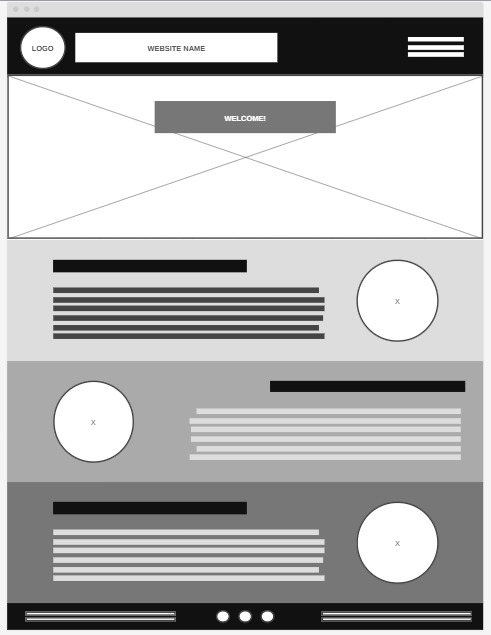

Overview
Purpose
The purpose of this website is to raise people's awareness about recycling and its importance. Also help them understand the correct way to do it and what elements it is done with.
Audience
Teenagers and adults who would like to learn how to recycle and what to do with "their trash." Let them learn to reuse it and donate it, not just throw it away. People who would like to have a good habit and help clean up the world.
Branding
Website Logo

Style Guide
Color Palette
Palette URL:
https://coolors.co/485f73-a5f26d-d9d9d9-bf8c6f| Primary | Secondary | Accent 1 | Accent 2 |
|---|---|---|---|
| #485F73 | #A5F26D | #D9D9D9 | #BF8C6F |
Typography
Heading Font:'Merriweather'
Paragraph Font: 'PT Serif Caption'
Normal paragraph example
The best Whitewater Rafting in Colorado, White Water Rafting Company offers rafting on the Colorado and Roaring Fork Rivers in Glenwood Springs. Since 1974, we have been family owned and operated, rafting the Shoshone section of Glenwood Canyon and beyond.
Colored paragraph example
Trips vary from mild and great for families, to trips exclusively for physically fit and experienced rafters. No matter what type of river adventures you are seeking, White Water Rafting Company can make it happen for you.
Navigation
Site Map
Wireframes
Home
This is the wireframe for our Home page, which illustrates the layout and arrangement of elements on our main page. We are designing a welcoming and informative landing page to introduce visitors to our recycling initiatives and tips. It is more than anything a presentation of what we want to achieve, our goals and why we are doing this. We also want to demonstrate the importance of recycling and the impact it has, what good consequences are obtained from it and the bad consequences of not doing it.


Recycling Tips
The idea of this page is to show people how and with what they can recycle. Recycling carries different materials which must meet certain requirements. We are also going to show people what they can do to recycle.

Contact Us
On this page you will be able to contact us and talk to us for any questions, donations or any reason why you want to contact us. It is important that each company leaves its information and social networks where it can communicate because that expands the public more and also leaves a good image.